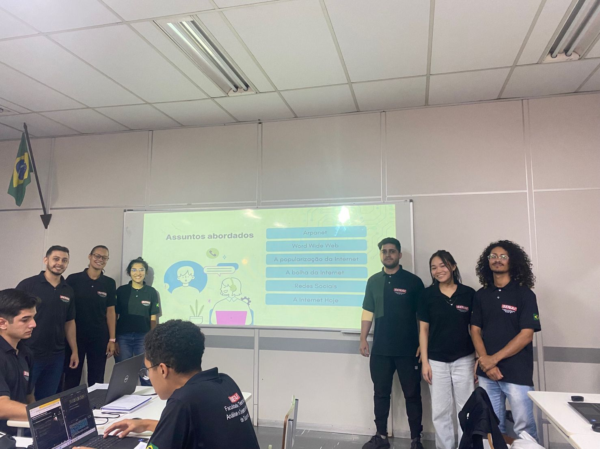
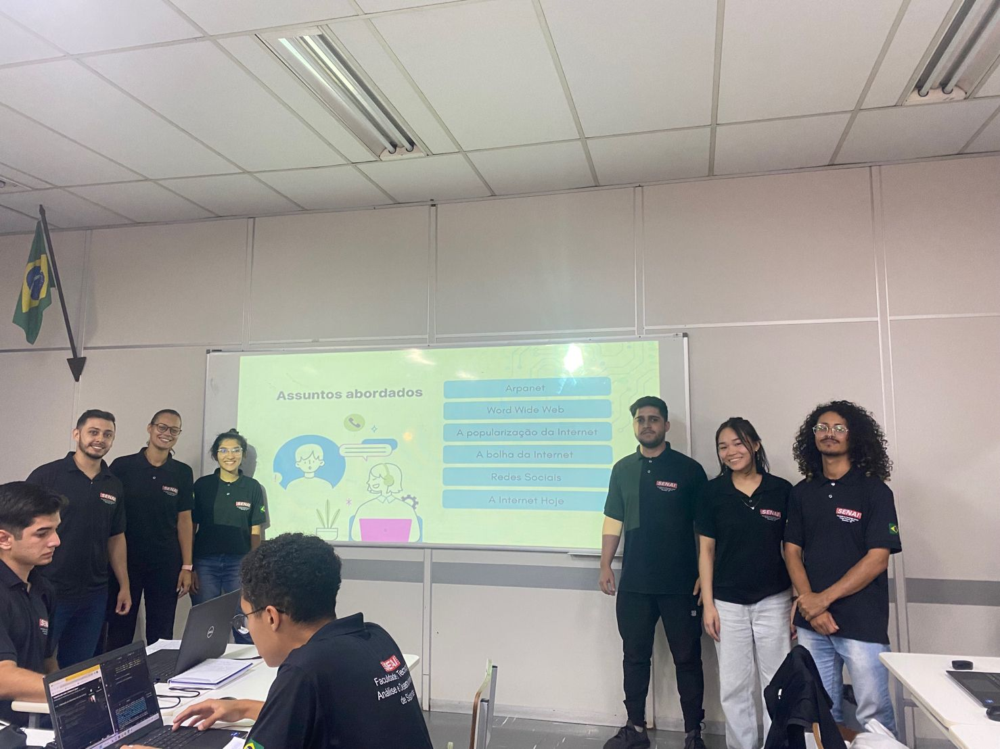

-
Redes de Computadores
Na mátia de Redes aprendemos sobre a topogogia,a forma como as redes estão interligadas, (Topologia Física e Lógica). Os modelos da camada OSI, principalmente e camada 3 (redes). Vimos e fizemos algoritimos da tabela ASCII e as portas de serviços. Depois da parte teórica, foi proposto fazer uma redes de computadores entre duas salas, que demos o nome de Cazaquistão e Zimbabue.
Apresentação proposta pelo professor André Souza, como aplicação do conteúdo que estamos vendo em sala de aula “Tecnologia da Informação e Conectividade”
Conteúdos Abordados Tipos de Redes Camada OSI Tabela ASCII Endereçamento IPV6 Slideshow com barra de rolagem 

 
